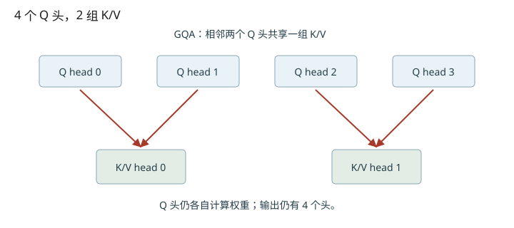
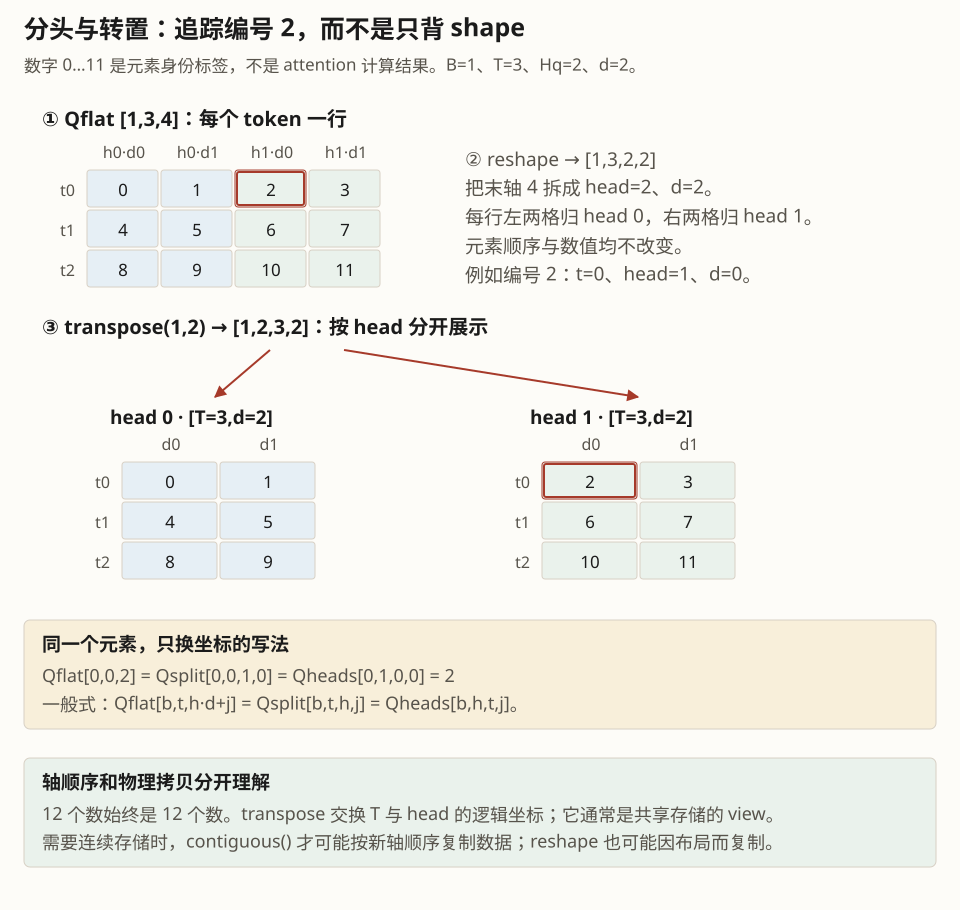
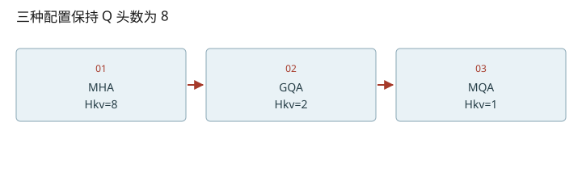

深入篇 18 / Transformer 逐步拆解 · 2026-11-08
MHA、MQA、GQA：头共享了什么
给 query head 找到它使用的 KV head，并算清 GQA 节省哪一部分显存。
给 query head 找到它使用的 KV head，并算清 GQA 节省哪一部分显存。

共享 K/V，不是合并 query
MHA 为每个 Q 头提供一组 K/V；MQA 让所有 Q 头共享一组；GQA 则折中，将 query 分成若干组，每组使用一组 K/V。各 query 头仍有自己的投影和注意力权重，并保留输出头。模型需要在训练或转换时适配这一结构，不能对任意 MHA 权重只改一个配置数字就假定质量不变。原始 GQA 论文提出了从 MHA checkpoint uptraining 的方法。
kv_head(h) = floor(h / group_size)
标准 KV 字节数 = 2 · L · B · T · Hkv · d · bytes
Qwen3-0.6B 的具体账本
Hq=16、Hkv=8，所以 query 头0、1用 KV头0，头2、3用 KV头1，依此类推。对于 BF16、28层、每头128维，每 token 的全层 KV 为 2×28×8×128×2=114688 bytes=112 KiB。长度4096、单请求时为448 MiB；若保持其他条件，改成16个 KV头则是896 MiB。这里是在比较缓存布局的容量，不是在宣称可以直接改已训练模型。
别把解释代码的 repeat 当成实现要求
为了写直观的 NumPy 实验，可以把 K/V 按组重复，得到与 Q 相同的头数。但推理内核可以直接映射索引，避免真实复制缓存。若你把 [Hkv,T,d] 的缓存永久物理扩展到 [Hq,T,d]，就失去 GQA 的缓存优势。不同 tensor parallel 配置还涉及 KV head 分片或复制；本地 nano-vllm 简化为 Hq 和 Hkv 均需被 TP size 整除，见 qkv 初始化处断言。
“GQA 节省两倍显存”应限定为本例的标准 KV 部分；权重、激活、workspace、CUDA Graph 仍要单独计算。它不是整张 GPU 的占用减半。
把维度变化拆到每一步
- 先把末维拆成[Hq,d]，再交换T与Hq两轴。
- 元素数相等不代表归属正确；点击完整版里的错误reshape反例。


改变变量，验证直觉
启用 JavaScript 后可交互；上面的图和下面的手算练习始终可读。
数值练习：先算，再核对
用8个 Q头、2个 KV头写出 head 0…7 的映射。再手算 L=2、T=8、Hkv=2、d=4、BF16 时的 KV 字节数。
闭卷检索
不要回看正文。答错后先解释原因，再重新打开这一课。
把结论落到源码
- 在 Qwen3Attention 查看 num_heads 与 num_kv_heads 的 TP 分片。
- 确认 Attention 接收到的 q 与 k/v 头数不同，缓存分配却只使用 num_key_value_heads。
以下行号由本地 vendor 文件生成；上游链接固定完整 commit，离线摘录可直接打开。
- nano-qkv：nanovllm/models/qwen3.py L14–91 · 上游证据
- nano-cache-allocation：nanovllm/engine/model_runner.py L103–122 · 上游证据
- nano-attention：nanovllm/layers/attention.py L43–75 · 上游证据
优先阅读：GQA: Training Generalized Multi-Query Transformer Models from Multi-Head Checkpoints。
速查：形状与公式 · 三框架映射 · 术语表 · 复习与实战路线 · 4070 Ti本地实验
只在当前浏览器保存自评；不会自动写成已掌握的 learning record。